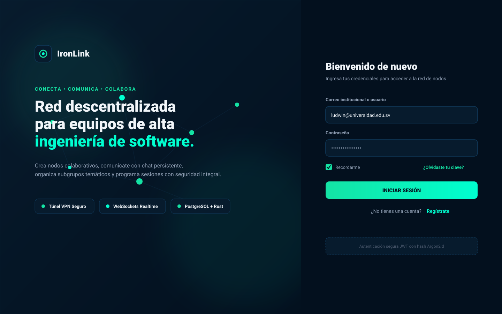

IronLink Master Suite (33 Frames)
◀ Anterior
01. Login Inicial (Default)
02. ⚠️ Login con Error de Credenciales
03. Registro de Nueva Cuenta
04. ⚠️ Registro con Errores de Validación Inline
05. Recuperar Clave: Paso 1 (Ingreso de Correo)
06. Recuperar Clave: Paso 2 (OTP + Nueva Clave)
07. Recuperar Clave: Paso 3 (Éxito Actualizada)
08. Verificación: Selección de Método (OTP vs Magic Link)
09. Verificación: Esperando Magic Link
10. Verificación: Ingreso PIN OTP 6 Dígitos
11. ⚠️ Verificación: Error Código Expirado (401)
12. Verificación: Cuenta Activada con Éxito
13. Dashboard: Nodos Activos & Métricas
14. Dashboard: Estado Vacío (0 Nodos)
15. ⚠️ Dashboard: Error 503 Servidor Desconectado
16. Dashboard Móvil: Drawer Lateral Desplegado
17. Chat: Sala Principal en Vivo
18. Chat: Canal Recién Creado (Vacío)
19. ⚠️ Chat: Error Socket WebSockets Desconectado
20. Chat: Menú Contextual de Mensaje (Responder/Editar/Eliminar)
21. Chat: Canal Específico de Subgrupo (# Backend Axum)
22. Subgrupos: Lista de Equipos Activos
23. Subgrupos: Estado Vacío
24. Reuniones: Sesiones Activas & Programadas
25. Reuniones: Estado Vacío
26. Modales: Perfil de Usuario & Crear Nodo
27. ⚠️ Modal: Error 409 Nombre de Nodo Duplicado
28. ⚠️ Modal: Error 404 Token No Encontrado
29. Modal: Detalles de Nodo & Gestión de Miembros RBAC
30. Modal: Crear Subgrupo (Público/Privado)
31. Modal: Programar Reunión (Fecha/Hora/Meet)
32. ⚠️ Modal: Perfil con Error de Contraseña Actual
33. ⚠️ Modal Peligroso: Confirmar Eliminación de Nodo
Siguiente ▶
↺ Inicio

Frame 1 de 33